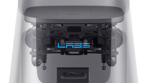

네이버랩스, 현대중공업지주와 로봇 사업 협력
2016년, 우리는 3차원 실내 정밀지도를 제작하는 로봇 M1을 처음 공개했습니다 . 이어서 작년에는, M1이 제작한 3차원 지도와 map cloud를 기반으로 스스로 이동하며 서비스를 제공하는 로봇 AROUND를 시범 운영했습니다. 당시 발표한 AROUND의 개발 취지는 생활밀착형 서비스 로봇의 대중화입니다. 이를 위해 로봇 자율주행의 핵심 기능을 분산하여 제작 비용을 절감하는 솔루션도 함께 발표했습니다. 그리고 올해, 서비스 로봇 대중화의 마일스톤을 가속하기 위해 새로운 파트너십을 시작합니다. 우리는 국내 산업용 로봇 1위의 현대중공업지주와 생활밀착형 로봇 사업을 위해 공동 협력하기로 했습니다.
2018.05.28 Robotics
